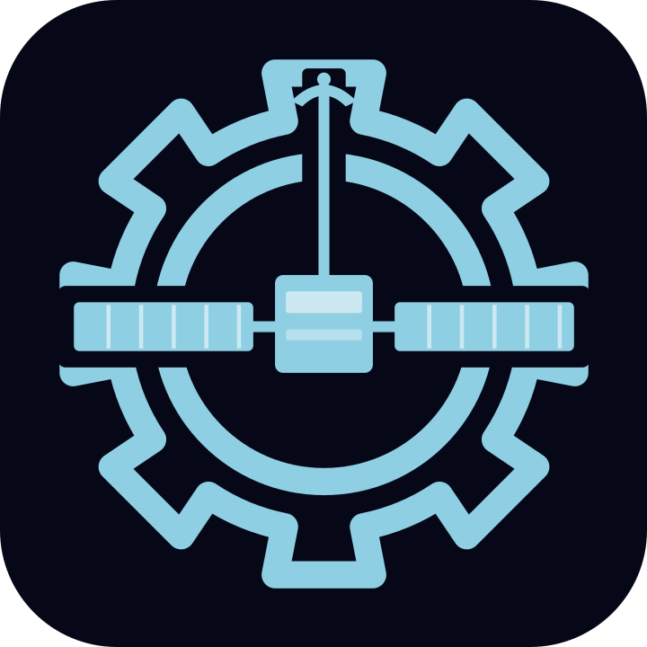
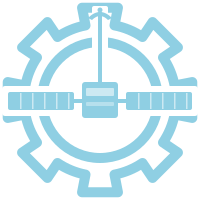
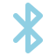
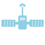

Cannot connect to the Satellite server. It may be stopped or restarting.
Waiting for server… will reconnect automatically.
Satellite will close and the new version — will be installed in the background. The receiver will reconnect automatically when the new version launches.
Active connections will be dropped during the restart.

Device PairingEnter this PIN on the sender to pair. Expires in 5 minutes.

ConnectionsNo active connections
No active controllers
No paired devices
mDNS / Bonjour is the modern discovery path and works on subnets that drop broadcast. The legacy UDP broadcast beacon stays on as a fallback for senders that predate the mDNS responder — turn it off only on a network where every sender supports mDNS.
Updates every 500ms · showing last 60 samples (30 seconds)
Loading logs…
Showing last 500 log entries · auto-refreshes every 2 seconds